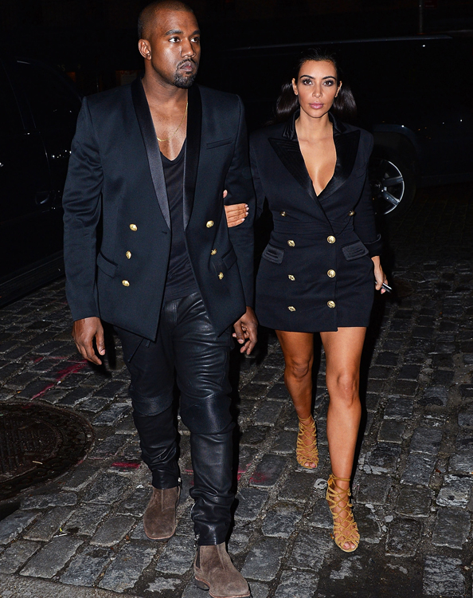
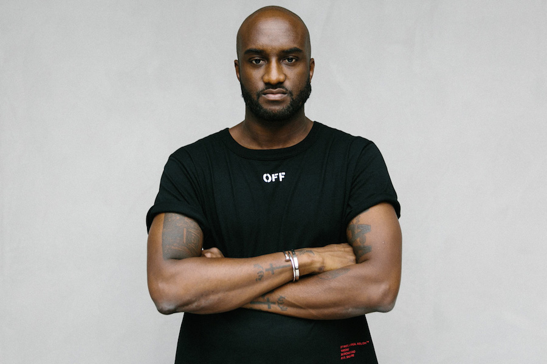

Hello and welcome to my page. Ive compiled a bunch of photos that I think do a great job illustrating my various interests of law, fashion, celebrity, food, my personal background/history, and more!
More About Me Right now I am studying for my LSATs and Fordham Law is the school I am hoping to go to, so the LSAT is at the top of my priority list right now. Penne vodka is my favorite food ever. I can seriously eat it breakfast, lunch, and dinner every single day...although my nutrionist would probably drop me as a client.

I seriously love Kim and Kanye. You know I'm a real fan because I loved them both independently, so when they got married my two worlds collided. Really love their styles and what they've done to today's culture. Not enough credit given. I love Beyonce and Jay-Z's music. Although I didnt catch them on tour, I watched the HBO Special. This is one of my favorite photos of them. They look so swag.

Virgil Abloh is my favorite designer and founder of my favorite clothing brand, Off-White. Virgil also designs for Louis Vuitton Man and is the Creative Director of Kanye West's brand, "Donda."